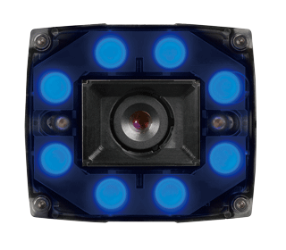

Vision Sensor Features

High-performance and robust PatMax RedLine®
PatMax RedLine® technology can find object shapes even in images which are difficult to detect due to noise, low contrast and reflection. The vision sensor detects out-of-focus images due to distortion of an object and variation of thickness at high speed, reducing inspection time such as pattern matching, filtering, defect detection, and barcode reading.
Good
Low contrast/overexposure

Low contrast
Noise (stripe)
Noise (coarse particle)
Clutter (extra feature)
Since PatMax RedLine® can calculate an accurate position adjusted value, a mechanism to align objects is no longer required, thereby contributing to cost reduction and downsizing of facility.
All necessary functions included
Mitsubishi Electric vision sensors are integrated vision sensors with all necessary functions embedded. Image acquisition, powerful vision tool library, and inspection result output function are available.
Support color verification
Color sensor model supports presence/absence applications, including color verification.
Color model
Monochrome model
Integrated lighting and filter
A high-powered LED ring light can be attached to the product front and does not require an external lighting. Novice user can easily install the product.
The integrated filter type eliminates the need to attach a filter to the light and lens.
Extensive option products
Lightings, lenses, and filters can be selected from a wide range of option products, providing users with flexibility to customize according to requirements. Also, these field-changeable options support change of works and conditions after installation.
Lighting according to measured item characteristics
Lighting can be changed according to measured object and color.
| Color | Features | General applications |
|---|---|---|
|
White |
|
|

Blue |
|
|
|
Red |
|
|
|
Near infrared |
|
|
Colors that are opposite each other on Hue circle are called complementary colors.
Lighting complementary color of the item color changes the item color closer to black.
Field customizable to your applications
Lens/lighting can be selected according to the operating environment
Lens/lighting can be selected from options according to the system.
Vision sensor monitor function
Through its interconnectivity with the MELSENSOR vision sensor and the GOT (HMI), the vision sensor system can be easily configured with a GOT (HMI), vision sensor, and Ethernet cable only.
Monitoring of the vision sensor and parameter registration can be done from the GOT (HMI) screen, realizing operation of the vision sensor system without a computer.

Specifications
| Item | Specifications | |
|---|---|---|
| Number of detectable vision sensor | (modules) | Max. 64 |
| Number of monitor/editable job files | Max. 100 | |
| Editable parameters | Parameters for correcting inspection area and model area | |
| Creating new job files | Not allowed*1 | |
| Vertical display | Not allowed | |
*1.To create a new job file, use In-Sight Explorer for MELSENSOR Vision.
Compatible products
| Product | Series | Firmware version |
|---|---|---|
| Vision sensor | VS80, VS70, VS20 | Ver. 5.7.5 |
| GOT | GOT2000 Series GT27, GT25 | Ver. 1.235V or later |